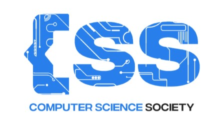

Home
About
Community
News and Events
Community
Community Outreach
We believe in giving back to the community. We organize outreach programs to help those in need.
Community Building
We aim to build a strong community of computer science students who share the same passion for technology.
Community Engagement
We engage with the community through various activities and events to promote the importance of technology.